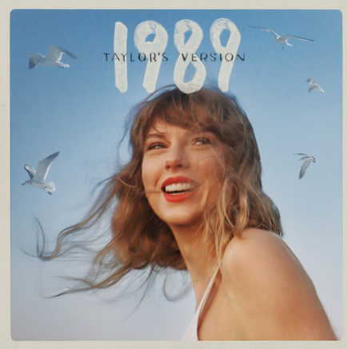
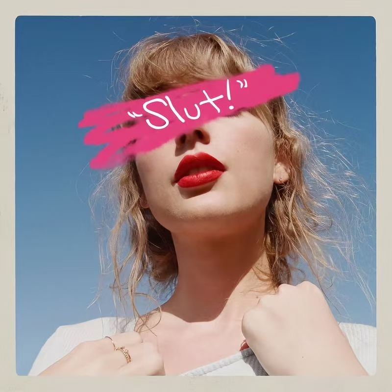

1989 (Taylor's Version)
这是泰勒从乡村正式转向流行的标志性专辑的重录版。蓝色天空、海鸥和大笑的封面，像是对自己说：我可以把过去重新唱一遍，也可以重新掌控自己的故事。
音乐上是干净利落的流行制作，歌词却仍然充满画面：霓虹灯、午夜公路、反复上演又结束的关系。重录版加入了 vault 曲目，让“1989 的故事”有了新的结局。
Style (Taylor's Version)
Blank Space (Taylor's Version)
Out Of The Woods (Taylor's Version)
“Slut!” (Taylor's Version)
